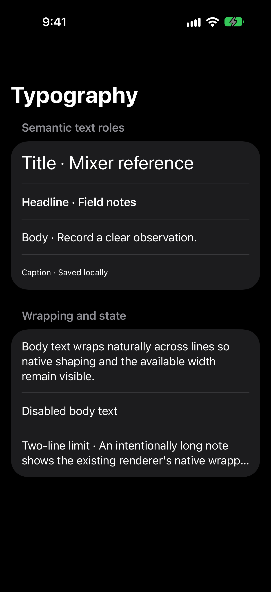
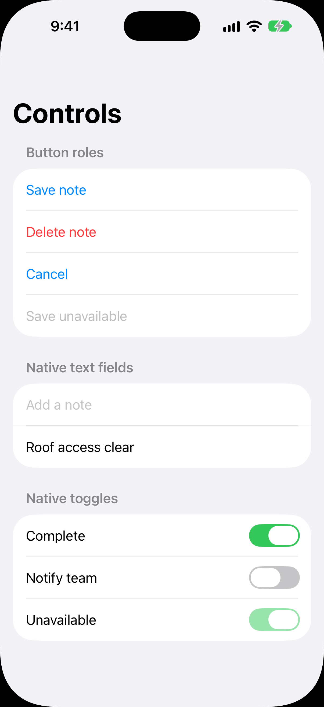
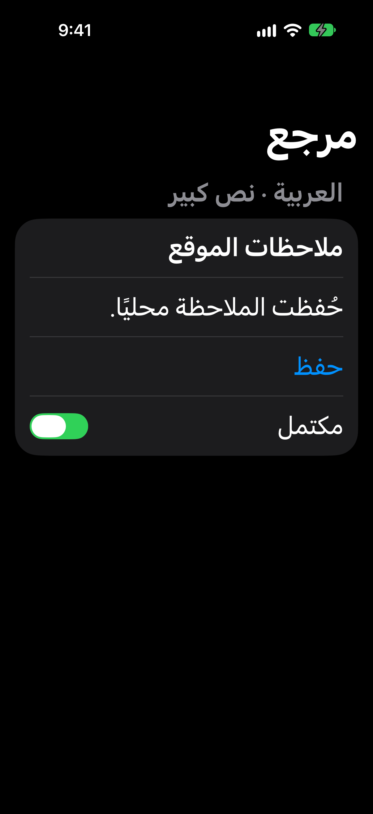
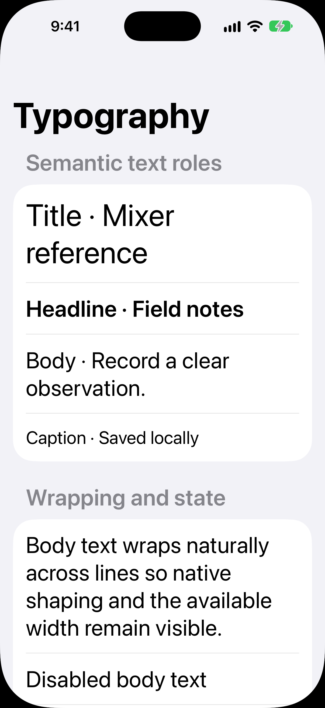
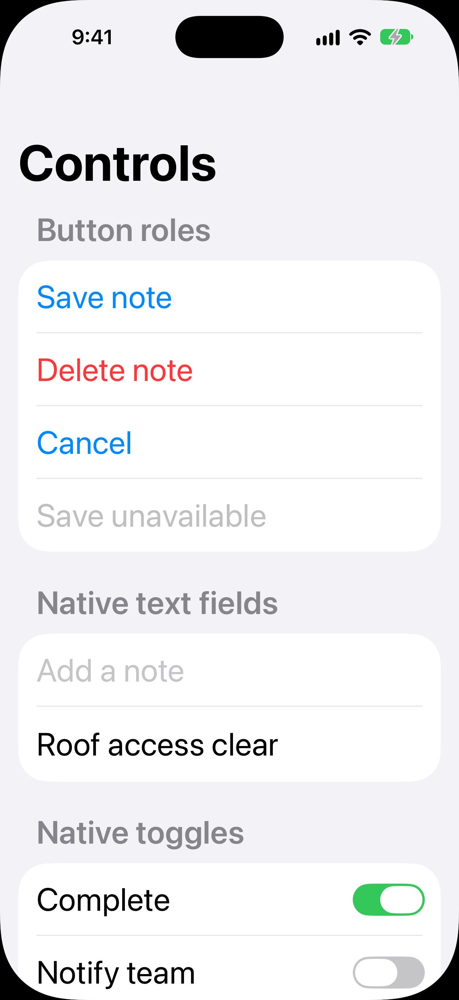
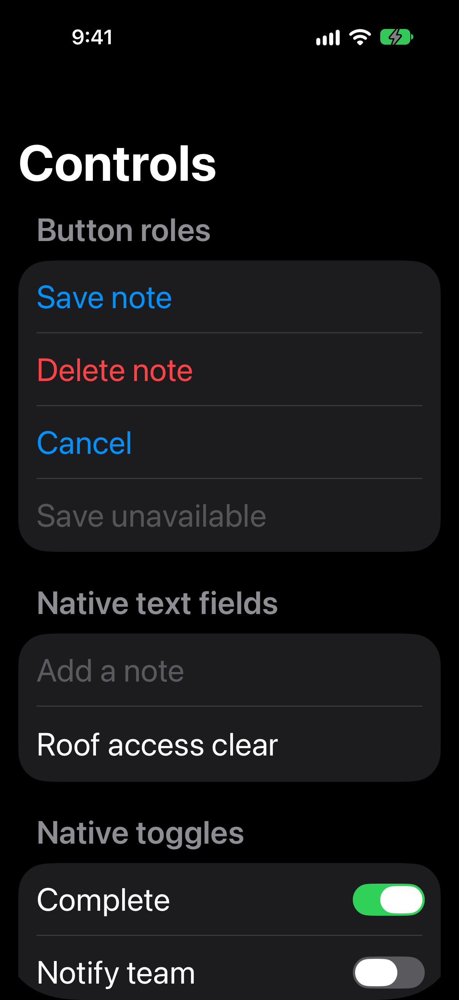

typography



Exact baseline design with public geometry/font/UIKit probes. Native PNGs, simulator only. Original eight historical cases are retained separately. Accessibility LTR additions show only the initial viewport; some laid-out rows extend below it. No physical parity or design approval is claimed.











